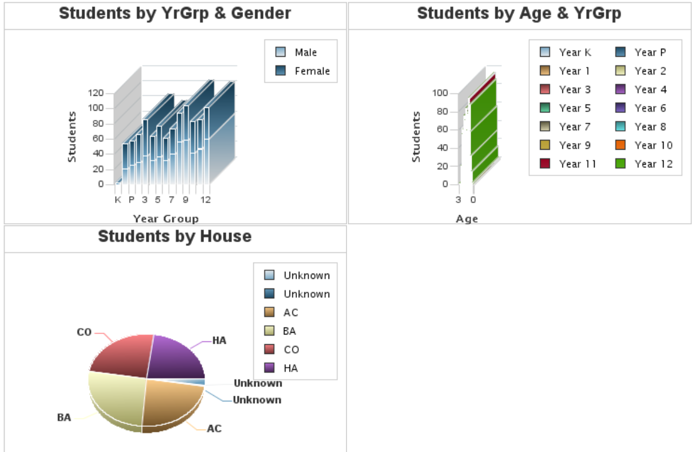

Brisbane

@cfbrisbane

http://www.meetup.com/brisbane-coldfusion/

http://tassweb.com.au/

https://github.com/cfbrisbane/
Security
Stuff you may not have thought about
Session Rotation
Perform Cookie rotation on User Login
Function: SessionRotate()
HTML / Script
Encode displayed ( and / or stored ) "< > &" characters
Filter displayed URL or FORM properties
Form Submission
Generate Single use tokens
SQL Injection
Use <cfqueryparam />
Directory Traversal
Don't <cfinclude template='D:\tmp\#URL.myFilePath#' />
Say what?
Don't be ashamed to say you don't know security
Think about hiring an external consultant
Big companies get it wrong too
For further information research OWASP top 10
Additional Resources
CFChart
ColdFusion 11
Replaces charting with new Library
Zingchart
Style
Use style properties and JSON content to customize styles
{"graphset":[
{
"type":"bar",
"background-color":"#FFFFFF",
"border-width":"0px",
"title":{
"font-color":"#000",
"font-size":"12px",
"background-color":"none",
"margin-top":"4px",
"wrap-text":1
},
"scale-x":{
"max-labels":22,
"line-width":1,
"line-color":"#000000",
"line-gap-size":0,
"guide":{
"line-width":0
},
"tick":{
"size":4,
"line-gap-size":0,
"line-width":1,
"line-color":"#000000"
}
},
"scale-y":{
"max-labels":20,
"line-width":1,
"line-color":"#000000",
"line-gap-size":0,
"tick":{
"size":4,
"line-gap-size":0,
"line-width":1,
"line-color":"#000000"
}
},
"legend":{
"layout":"x4",
"border-width":"0px",
"background-color":"#FFF",
"alpha":0,
"shadow":0,
"position":"50% -1%",
"border-radius":5,
"item":{
"marker-style":"square",
"border-width":0,
"margin-right":6,
"font-size":12
}
},
"tooltip":{
"text":"%t
%v",
"shadow":0,
"background-color":"#ffffff",
"border-color":"#000000",
"border-width":"1px",
"text-align":"left",
"font-color":"#000000"
},
"plotarea":{
"margin-top":"50px",
"margin-bottom":"40px",
"margin-left":"45px",
"margin-right":"20px",
"shadow":0
},
"plot":{
"value-box":{
"visible":false
},
"highlight":true,
"border-width":0,
"shadow":0
}
}
]
}
Implementation
Show Legend ??
ColdFusion 11 installs are different ??
Look crap out of the box
3D isn't great
Documentation isn't great
They don't work sometimes
Example 1. ColdFusion 9 / 10 Default
Example 1. ColdFusion 11 Default
Example 1. ColdFusion 11 Styled ( Server 1 )
Example 1. ColdFusion 11 Styled ( Server 2 )
Example 2. ColdFusion 11 Styled ( Server 1 )
Example 2. ColdFusion 11 Styled ( Server 2 )
Example 3. ColdFusion 9 / 10 Default
Example 3. ColdFusion 11 Styled ( Server 1 )
Alternatives
JavaScript Charting Libraries
D3.js / NVD3.js
Inhouse Dashboard D3 / NVD3

Example 1. D3 / NVD3
Example 2. D3 / NVD3
Example 3. D3 / NVD3
Server Side
What about server side rendering?
Some thoughts
<cfhtmltopdf />
PhantomJS
No transition "Hack"
//if ( window._phantom ) {
var now = Date.now;
Date.now = function() { return Infinity; };
d3.timer.flush();
Date.now = now;
//}
http://stackoverflow.com/questions/14443724/disabling-all-d3-animations-for-testing
ColdFusion
<cfchart /> another "don't use" to add to the list
<cfform />
Links / Resources
Events
CampJS IV
Oct 31—Nov 3 2014 Springbrook, Australia
Web Directions
Oct. 30—31 2014 Sydney, Australia